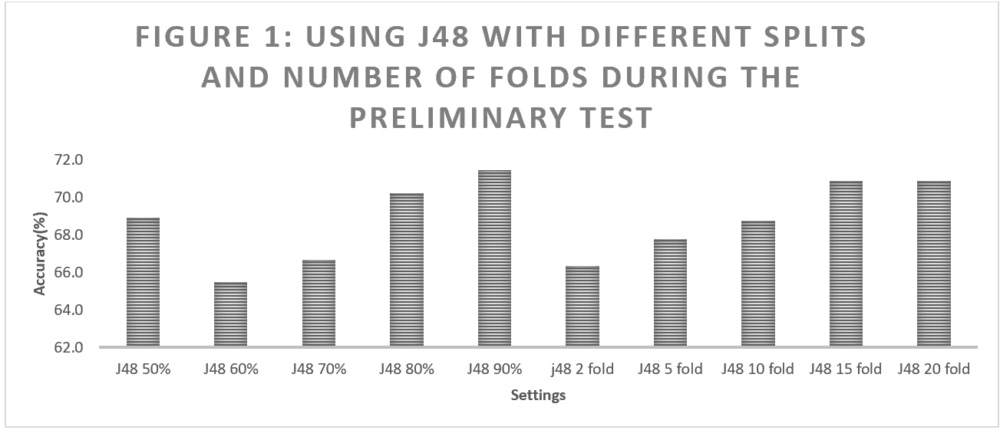
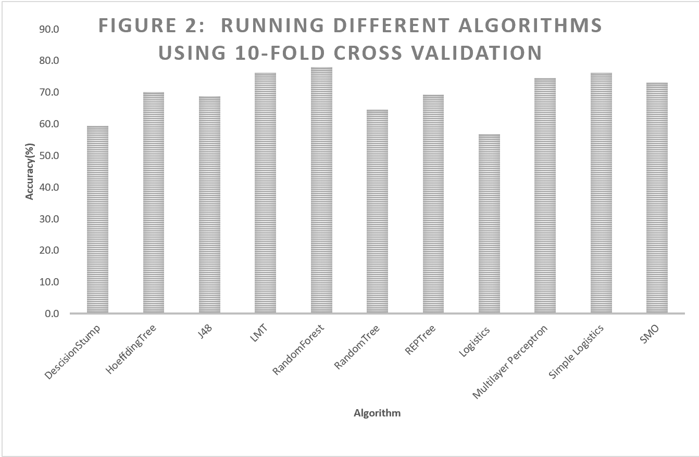
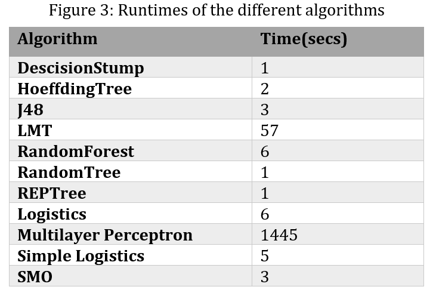
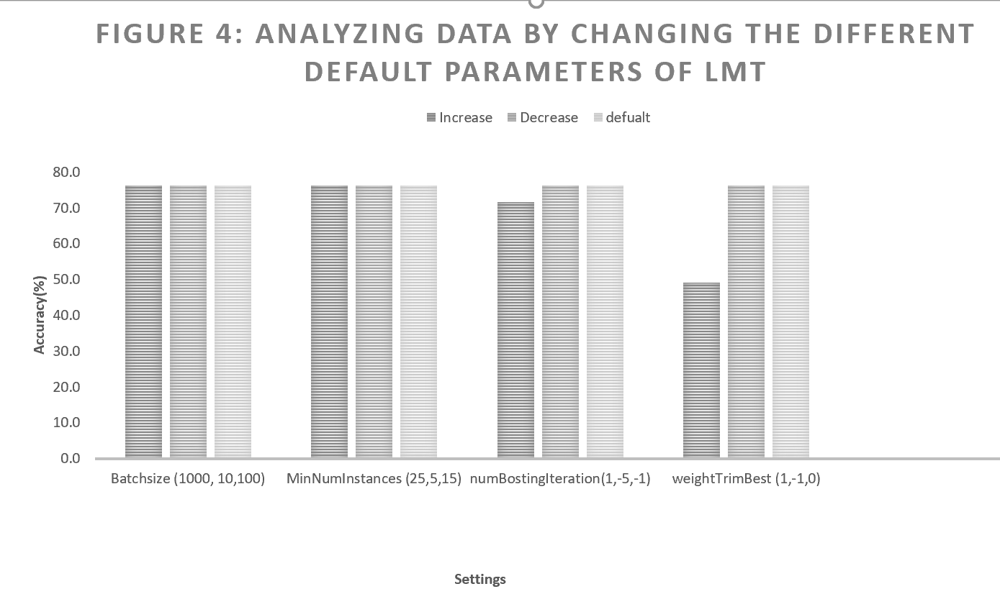
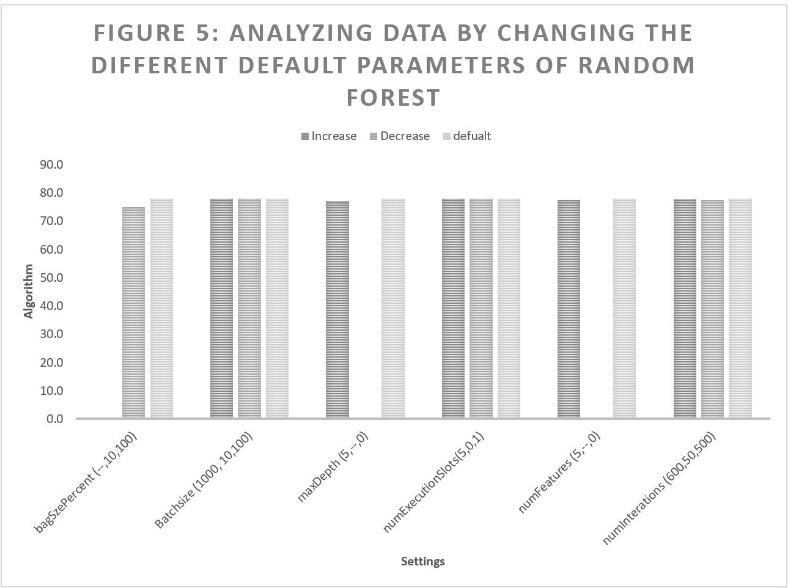
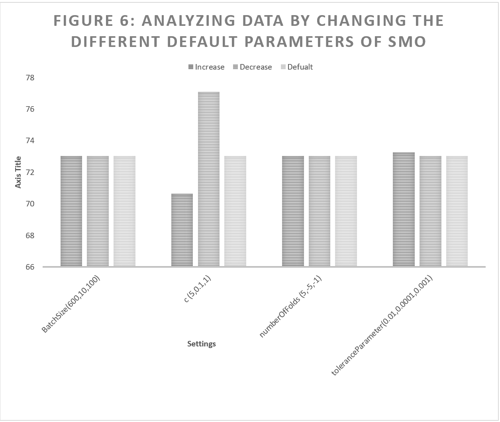
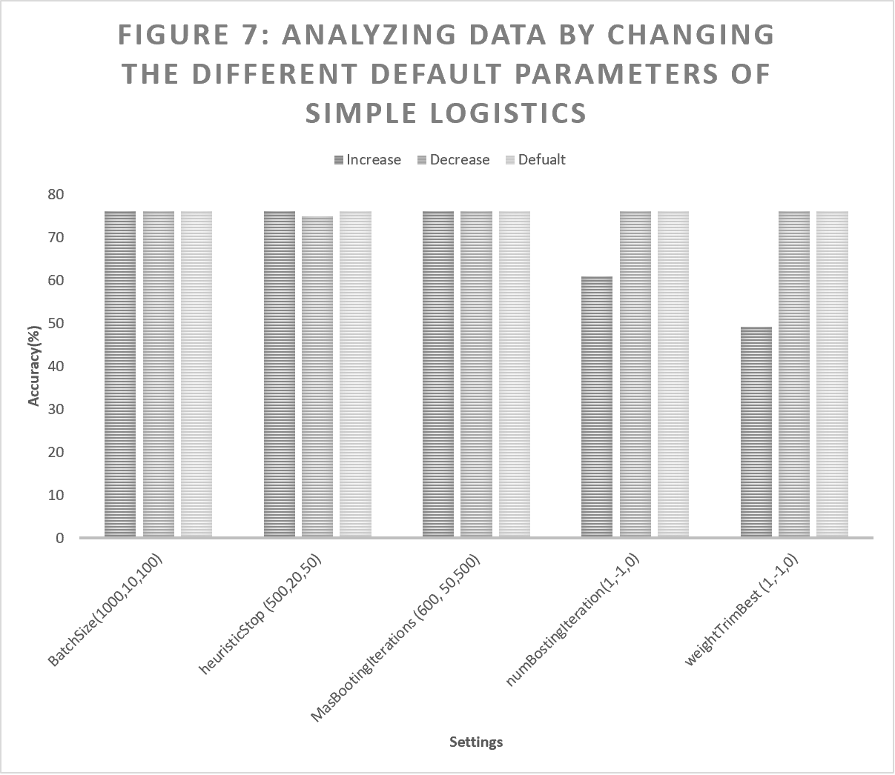
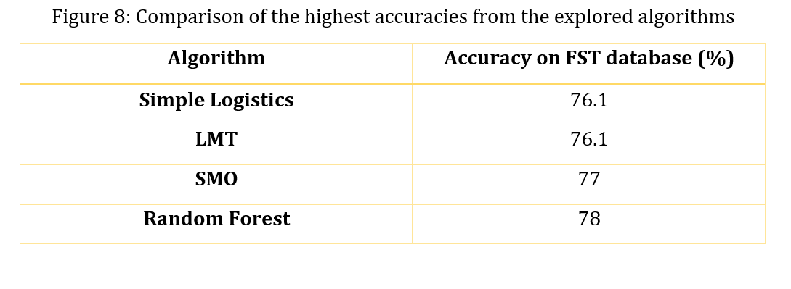

Methodology and Evaluation
Datasets and attribute selection
The databases to be used in this project will be the FST database and the PROVEDit database. The FST database contains the set of DNA samples used by the Office of the Chief Medical Examiner (OCME) of New York to validate the Forensic Statistical Tool, FST (a forensic DNA software). It is a database that contains more than 500 DNA samples. It includes details about the mode of collection of the samples, their sources, electropherograms, etc. This database consists of DNA samples in different forms (blood, saliva, skin cells, etc.), in different conditions (degraded or not), have varying NoC(2-4), different masses (12-510pg), etc.
The PROVEDit database on the other hand is made up of over 25,000 DNA profiles that have been synthesized using 144 lab conditions. The database is created by a research group at Rutgers University (Camden). These DNA profiles have been created to simulate the different forms in which the DNA collected by crime investigators exists. The database ranges from single-source samples to complex mixtures. The mixtures are mainly made up of DNA samples from two to five people combinations. These combinations, however, are in varying proportions (from 50:50 ratios to 99:1). The conditions of the samples range from degradation (due to enzymatic conditions or sonication) to damage due to UV rays. The significance of this database is that it is free and can be accessed by anyone at any time. (website: https://lftdi.camden.rutgers.edu/provedit/files/).
One of the preliminary processes of the project is was the determination of the right format to represent the samples. The quest for the right format also entails what portion of the DNA samples will be used for the analysis, what will be regarded as attributes and how such attributes will be represented. Java programs will be used to help in the construction of the right format for the DNA samples.
Determination of the best algorithmThe platform that will be used to analyze samples in this project is Weka. Specifically, the exploration and experimentation modules of Weka will be used. The attainment of a proper template will be followed by testing numerous machine learning algorithms to determine the algorithm with the highest accuracy. Numerous parameters of this algorithm will be further explored with the goal of attaining better accuracies. This algorithm will then be used to conduct the studies associated with the project. The studies will be evaluated on how well the NoC is obtained under different conditions.
Data preprocessing
For analysis, the format in which the 2 databases were was not compatible with Weka, therefore, modifications were needed. For these modifications, a java code was written. The code was used to convert the inputs into an acceptable template csv file. These csv files were later converted into arff files within Weka. In these arff files, DNA samples are considered instances while allele number and allele height are considered attributes. Different arff files may have different numbers of attributes and instances. Files made from the PROVEDIt database generally tend to have more instances (since it has the most samples). Also, samples that have both allele numbers and allele heights tend to have the most attributes when compared to files with only allele number or only allele height).
Running Preliminary testsTo get a feel of how the generated data will behave, a preliminary test was conducted using the J48 Tree. The J48 Tree is the Java implementation of the C4.5 Tree in the Weka platform. The C4.5 Tree is an algorithm that uses information gain to build trees. In this tree, decisions are made based on the node with the highest information gain (IG). To determine the IG of different nodes, their weighted entropies are subtracted from the entropy of their parent node. The node with the highest IG is generally chosen. In the preliminary test, the J48 was run using different cross-validation folds and percentage splits (while all other parameters were at default settings).
In machine learning, cross-validation folds (CF) and percentage splits (PS) are used to randomly partition the dataset into 2 distinct groups: the training dataset and the testing dataset. An algorithm of choice learns from the training dataset and is later tested on the testing dataset. The main difference between CF and PS is that in CF, the data is partitioned into different sets of training and testing data. Each set is unique in terms of the samples in its testing and training data. The total number of sets is equal to the number of folds (generally denoted by K). The analysis is conducted on all the sets of data and an aggregate of the results from the different sets is reported. In percentage split, however, the data is split into only one set. This set is analyzed, and its result is reported. Figure 1 shows the results obtained from the J48 tests. In Figure 1, it can be observed that the model with the highest accuracy was the 90% split. This setting had an accuracy of about 71.4%. The model with the lowest accuracy was the 60% split. This had a percentage accuracy of 65.5%.

Determination of the best algorithm for the analysis
Following the preliminary test was the study of the “considered” algorithms. The considered algorithms were RandomTree, REPTree, DecisionStump, HoeffdingTree, J48, RandomForest, SMO, SimpleLogistics, Logistics, LMT, and MultilayerPerceptron. All these algorithms were run using 10-fold cross-validation (while keeping all other settings at default). From these runs, Figure 2 was obtained. In Figure 2, it can be observed that the different algorithms had contrastingly different accuracies, however, all accuracies were found to be above 50%. The algorithm with the highest accuracy was the Random Forest algorithm (an algorithm that creates multiple trees and makes decisions based on aggregates of the trees16). This algorithm was found to have an accuracy of 78%. Overall, all algorithms had varying run times. These run times are shown in Figure 3. Generally, the functions were found to have longer run times than the trees. The parameters of four algorithms: Random Forest, Simple Logistics, SMO and LMT were further explored.


When the data was
further analyzed using the LMT algorithm, Figure 4 was obtained. In Figure 4,
it can be observed that each parameter of the LMT algorithm was manipulated in
two ways. By increasing its default value (dark grey) and by decreasing it (mid grey),
while keeping all other parameters in default settings. The number associated
with the name of each parameter represents the manipulations conducted. For
example, Batchsize (1000,10,100) shows an increased value of 1000, a decreased value
of 10, and a default value of 100.

From Figure 4, it can be observed that changing parameters such as Batchsize and MinNumInstances had no effect on the accuracy of the algorithm (whether the default value was either increased or decreased). Parameters such as numBostingIteration and weightTrimBest showed a decrease in accuracy when the default value was increased (from 15 to 25) and (from 0 to 1) respectively. Overall, there was no increase in the accuracy of the algorithm when the default settings were changed. For this algorithm, the highest accuracy obtained was 76.1%.
When the data was further analyzed using the Random Forest algorithm, Figure 5 was obtained. In Figure 5, it was observed that changes in the default setting of the parameters generally did not induce an increase in accuracy. It can also be observed from Figure 5 that some of the values were missing (values such as the increased bagSizePercent and, the decreased maxDepth, and numFeatures respectively). This is mainly because such settings were not possible in the Weka platform. For example, in the case of the bagSizePercent, the lowest setting was found to be 10%, therefore, a setting less than that was not attainable. In the case of the maxDepth, the default value was already 0, therefore, it was not possible to decrease it further. The same is the case of the numFeatures. Overall, the highest accuracy attained from the Random Forest Algorithm was 78%.


When the data was further analyzed using the SMO algorithm, Figure 6 was obtained. In Figure 6, it can be observed that changes in the settings of the parameters such as BatchSize and numberOfFolds did not create a change in accuracy. However, changes in parameters such as c and toleranceParameter created some changes. For that matter, when the value of c was increased from a default value of 1 to 5, The accuracy was found to decrease from 73% to 70.6%. when it was increased to a value of 0.1 on the other hand, its accuracy was found to increase from 73% to 77%. Overall, the highest accuracy obtained from this algorithm was 77%.

When the data was further analyzed using the Simple Logistics algorithm, Figure 7 was obtained. In Figure 7, it can be observed that changes in the settings of the parameters did not induce an increase in accuracy. The highest accuracy obtained from this algorithm was 76.1%. Figure 8 shows the maximum accuracies of all the algorithms that were further explored during the analysis. In Figure 8, it was observed that the lowest accuracy obtained was 76.1%. This was obtained from the LMT and Simple Logistics algorithms. The algorithm with the highest accuracy was the Random Forest. This algorithm had an accuracy of 78%. Still, the Random Forest algorithm was found to have the highest accuracy. For this reason, all further analysis in this study are conducted using the Random Forest algorithm. A total of 4 studies (Study 1- Study 4) will be conducted using this algorithm.
